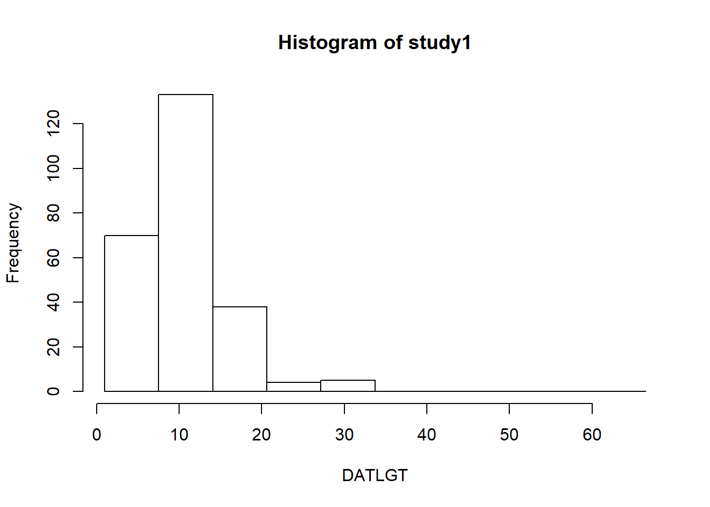
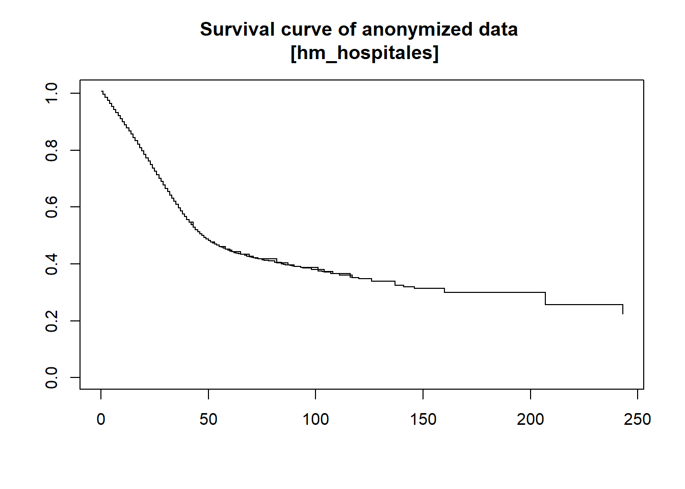
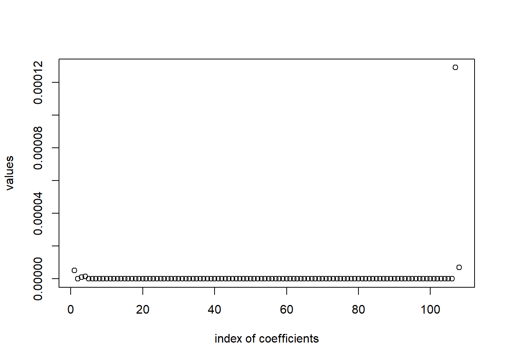

Part 5: Statistical models
Now that we have covered the basics, we can begin to analyze the data in more depth.
In this section we will be using the HM Hospitales and Cluj study servers. If you want to follow, make sure to close your current connections, setup the new ones, load the data (same resources loaded on the part 2) and calculate the re-coded variable CMXCOM (seen on the part 3).
In this section we will go over some of the statistical models we can fit by using DataSHIELD.
Logistic regression
We will perform some logistic regressions analysis to see the association of different variables to mortality (DSXOS variable). To achieve this, we will have to apply some of the concepts we have already seen in order to prepare our data.
Preparing the data
We can use the the variables age, gender, cholesterol, etc. We are going to use arbitrary variables that are common on the HM Hospitales and Cluj study servers for illustrating purposes.
For the logistic regression, the variables we will use are the following:
DSXOS: Character variable. Outcome status encoded asDeceased,RecoveredandTransferred. To perform a logistic regression this variable will have to be re-encoded as1/0(case/control); the case beingDeceasedand the controls beingRecoveredandTransferred.CMXCOM: Factor variable. Number of comorbidities, encoded as0,1,2and3+.CMXCLD: Character variable. Chronic liver disease, encoded asYesandNo.CMXCPD: Character variable. Chronic pulmonary disease, encoded asYesandNo.
We only have to do some data wrangling for the DSXOS variable, first we do the re-coding.
ds.recodeValues(var.name = "data$DSXOS",
values2replace.vector = c("Deceased", "Recovered", "Transferred"),
new.values.vector = c(1, 0, 0),
newobj = "DSXOS_recoded")Error: There are some DataSHIELD errors, list them with datashield.errors()datashield.errors()$umf_cluj
[1] "Command 'recodeValuesDS(\"data$DSXOS\", \"Deceased,Recovered,Transferred\", \n \"1,0,0\", NULL)' failed on 'umf_cluj': Error while evaluating 'is.null(base::assign('DSXOS_recoded', value={dsBase::recodeValuesDS(\"data$DSXOS\", \"Deceased,Recovered,Transferred\", \"1,0,0\", NULL)}))' -> Error : Error: values2replace.text argument too long (see nfilter.stringShort)\n"
$hm_hospitales
[1] "Command 'recodeValuesDS(\"data$DSXOS\", \"Deceased,Recovered,Transferred\", \n \"1,0,0\", NULL)' failed on 'hm_hospitales': Error while evaluating 'is.null(base::assign('DSXOS_recoded', value={dsBase::recodeValuesDS(\"data$DSXOS\", \"Deceased,Recovered,Transferred\", \"1,0,0\", NULL)}))' -> Error : Error: values2replace.text argument too long (see nfilter.stringShort)\n"We can see that the DataSHIELD filter is complaining that the length of the values2replace.vector is too large. To overcome this issue, we can perform separate function calls for each of the levels.
ds.recodeValues(var.name = "data$DSXOS",
values2replace.vector = "Deceased",
new.values.vector = 1,
newobj = "DSXOS_recoded")$is.object.created
[1] "A data object <DSXOS_recoded> has been created in all specified data sources"
$validity.check
[1] "<DSXOS_recoded> appears valid in all sources"ds.recodeValues(var.name = "DSXOS_recoded",
values2replace.vector = "Recovered",
new.values.vector = 0,
newobj = "DSXOS_recoded")$is.object.created
[1] "A data object <DSXOS_recoded> has been created in all specified data sources"
$validity.check
[1] "<DSXOS_recoded> appears valid in all sources"ds.recodeValues(var.name = "DSXOS_recoded",
values2replace.vector = "Transferred",
new.values.vector = 0,
newobj = "DSXOS_recoded")$is.object.created
[1] "A data object <DSXOS_recoded> has been created in all specified data sources"
$validity.check
[1] "<DSXOS_recoded> appears valid in all sources"By doing that we successfully created the object DSXOS_recoded, now we just have to convert it to numerical.
ds.asNumeric(x.name = "DSXOS_recoded", newobj = "DSXOS_recoded_num")$is.object.created
[1] "A data object <DSXOS_recoded_num> has been created in all specified data sources"
$validity.check
[1] "<DSXOS_recoded_num> appears valid in all sources"ds.summary("DSXOS_recoded_num")$umf_cluj
$umf_cluj$class
[1] "numeric"
$umf_cluj$length
[1] 999
$umf_cluj$`quantiles & mean`
5% 10% 25% 50% 75% 90% 95% Mean
0.0000000 0.0000000 0.0000000 0.0000000 0.0000000 1.0000000 1.0000000 0.1304348
$hm_hospitales
$hm_hospitales$class
[1] "numeric"
$hm_hospitales$length
[1] 6864
$hm_hospitales$`quantiles & mean`
5% 10% 25% 50% 75% 90% 95% Mean
0.0000000 0.0000000 0.0000000 0.0000000 0.0000000 1.0000000 1.0000000 0.1107903 ds.numNA("DSXOS_recoded_num")$umf_cluj
[1] 746
$hm_hospitales
[1] 284Finally, we add it to our data.frame with the other covariates, and we are ready to perform the logistic regression.
DSI::datashield.assign.expr(connections, "data", "cbind(data, DSXOS_recoded_num)")Fitting the models
Pooled analysis
Now we can fit the models. First, we will calculate whether chronic liver disease anc chronic pulmonary disease are associated with higher risk of mortality.
ds.glm(formula = "DSXOS_recoded_num ~ CMXCLD + CMXCPD",
data = "data",
family = "binomial")$coefficients Estimate Std. Error z-value p-value low0.95CI.LP
(Intercept) -2.1789095 0.04339820 -50.207371 0.000000e+00 -2.2639684
CMXCLDYes 0.4954367 0.49518245 1.000513 3.170621e-01 -0.4751031
CMXCPDYes 0.5749502 0.09502311 6.050636 1.442753e-09 0.3887084
high0.95CI.LP P_OR low0.95CI.P_OR high0.95CI.P_OR
(Intercept) -2.0938506 0.1016605 0.09415137 0.109696
CMXCLDYes 1.4659764 1.6412148 0.62182095 4.331771
CMXCPDYes 0.7611921 1.7770421 1.47507430 2.140827And we also calculate the association of the outcome status to the number of comorbidities.
ds.glm(formula = "DSXOS_recoded_num ~ CMXCOM",
data = "data",
family = "binomial")$coefficients Estimate Std. Error z-value p-value low0.95CI.LP
(Intercept) -2.8013604 0.07634247 -36.694653 8.887664e-295 -2.9509889
CMXCOM1 0.9451591 0.09699454 9.744457 1.948171e-22 0.7550533
CMXCOM2 1.3683043 0.11142871 12.279639 1.165177e-34 1.1499080
CMXCOM3+ 1.6463952 0.15775657 10.436302 1.692779e-25 1.3371980
high0.95CI.LP P_OR low0.95CI.P_OR high0.95CI.P_OR
(Intercept) -2.651732 0.05725071 0.0496898 0.06588235
CMXCOM1 1.135265 2.57322286 2.1277250 3.11199795
CMXCOM2 1.586701 3.92868299 3.1579024 4.88759571
CMXCOM3+ 1.955592 5.18824326 3.8083574 7.06810461Meta-analysis
To fit the same models to be meta-analyzed, we just have to use a different function with the same structure.
mod1 <- ds.glmSLMA(formula = "DSXOS_recoded_num ~ CMXCLD + CMXCPD",
dataName = "data",
family = "binomial")
SAVING SERVERSIDE glm OBJECT AS: < new.glm.obj >mod1$output.summary$study1$coefficients Estimate Std. Error z value Pr(>|z|)
(Intercept) -1.9692942 0.2151323 -9.1538757 5.492676e-20
CMXCLDYes 0.4102159 0.5341748 0.7679432 4.425209e-01
CMXCPDYes 0.1766349 0.5276192 0.3347771 7.377932e-01mod1$output.summary$study2$coefficients Estimate Std. Error z value Pr(>|z|)
(Intercept) -2.1873606 0.04432877 -49.34404098 0.000000e+00
CMXCLDYes -9.3786929 196.96768400 -0.04761539 9.620228e-01
CMXCPDYes 0.5902685 0.09665529 6.10694500 1.015562e-09mod2 <- ds.glmSLMA(formula = "DSXOS_recoded_num ~ CMXCOM",
dataName = "data",
family = "binomial")$output.summary$study1$coefficients
SAVING SERVERSIDE glm OBJECT AS: < new.glm.obj >At this moment, the consortia is using dsBaseClient 6.1.1. In the new version 6.2, there is a function to visualize the meta-analyzed coefficients using forestplots.
Poisson Regression
a veces el outcome no es binario sino que es una variable de conteo
The same functions we just used to fit logistical regressions, can also fit piecewise exponential regressions. This is achieved by selecting the output family to be of type poisson. For the variable DATLGT (Length of stay in hospital), we can check that it does follow a Poisson distribution.
histogram <- ds.histogram("data$DATLGT")Warning: umf_cluj: 1 invalid cellsWarning: hm_hospitales: 0 invalid cells
And we can fit the model.
ds.glm(formula = "DATLGT ~ CMXCOM",
data = "data",
family = "poisson")$coefficients Estimate Std. Error z-value p-value low0.95CI.LP
(Intercept) 2.2098088 0.005767066 383.17728 0.000000e+00 2.1985056
CMXCOM1 0.1682207 0.008383213 20.06637 1.452320e-89 0.1517899
CMXCOM2 0.2119990 0.010975000 19.31654 3.899437e-83 0.1904884
CMXCOM3+ 0.2149337 0.018283395 11.75568 6.602924e-32 0.1790989
high0.95CI.LP EXPONENTIATED RR low0.95CI.EXP high0.95CI.EXP
(Intercept) 2.2211121 9.113974 9.011537 9.217576
CMXCOM1 0.1846515 1.183198 1.163916 1.202799
CMXCOM2 0.2335096 1.236147 1.209840 1.263025
CMXCOM3+ 0.2507685 1.239780 1.196139 1.285013Survival analysis
The variable selection and survival analysis sections will only use the HM Hospitals study server. This is due because at the time of writting this material it is the only study server with the dsSurvival and dsMTLBase packages installed.
datashield.logout(connections$umf_cluj)
connections$umf_cluj <- NULLIt is expected that the survival rate of patients is lower as the stay at hospital is increased. Here we will check this argument.
First, we will prepare our data. For the dsSurvival package, we have to separate into different objects the event variable (DSXOS_recoded_num) and the survival time variable (DATLGT). Both variables have to be numeric.
ds.make(toAssign = "data$DSXOS_recoded_num", newobj = "EVENT")$is.object.created
[1] "A data object <EVENT> has been created in all specified data sources"
$validity.check
[1] "<EVENT> appears valid in all sources"ds.make(toAssign = "data$DATLGT", newobj = "SURVTIME")$is.object.created
[1] "A data object <SURVTIME> has been created in all specified data sources"
$validity.check
[1] "<SURVTIME> appears valid in all sources"And now we can perform the survival analysis using Cox proportional hazards model.
dsSurvivalClient::ds.coxph.SLMA(formula = 'survival::Surv(time=SURVTIME,event=EVENT)~data$DMRGENDR',
dataName = 'data',
datasources = connections)ssssstimelllSURVTIMErrreventlllEVENTzzz~data$DMRGENDR$hm_hospitales
$call
survival::coxph(formula = formula, data = dataTable, weights = weights,
ties = ties, singular.ok = singular.ok, model = model, x = x,
y = y)
$fail
NULL
$na.action
18 57 139 268 313 336 356 364 370 371 382 394 432 475 487 513
18 57 139 268 313 336 356 364 370 371 382 394 432 475 487 513
515 528 555 565 577 578 601 629 634 638 656 682 688 691 694 705
515 528 555 565 577 578 601 629 634 638 656 682 688 691 694 705
709 721 733 736 751 847 854 864 926 973 1157 1332 1365 1417 1419 1420
709 721 733 736 751 847 854 864 926 973 1157 1332 1365 1417 1419 1420
1443 1516 1526 1551 1604 1616 1626 1649 1650 1718 1756 1763 1802 1810 1829 1835
1443 1516 1526 1551 1604 1616 1626 1649 1650 1718 1756 1763 1802 1810 1829 1835
1858 1870 2119 2120 2174 2221 2294 2387 2401 2402 2412 2416 2420 2421 2424 2440
1858 1870 2119 2120 2174 2221 2294 2387 2401 2402 2412 2416 2420 2421 2424 2440
2444 2458 2460 2470 2489 2495 2521 2528 2532 2538 2547 2548 2551 2564 2571 2572
2444 2458 2460 2470 2489 2495 2521 2528 2532 2538 2547 2548 2551 2564 2571 2572
2584 2585 2597 2600 2602 2603 2628 2631 2652 2671 2675 2677 2688 2726 2761 2783
2584 2585 2597 2600 2602 2603 2628 2631 2652 2671 2675 2677 2688 2726 2761 2783
2811 2829 2882 2883 3029 3093 3145 3326 3436 3444 3445 3449 3458 3460 3475 3485
2811 2829 2882 2883 3029 3093 3145 3326 3436 3444 3445 3449 3458 3460 3475 3485
3502 3509 3520 3528 3531 3535 3548 3549 3557 3576 3579 3584 3630 3632 3644 3645
3502 3509 3520 3528 3531 3535 3548 3549 3557 3576 3579 3584 3630 3632 3644 3645
3647 3704 3723 3728 3745 3749 3750 3751 3775 3776 3794 3805 3813 3814 3854 3856
3647 3704 3723 3728 3745 3749 3750 3751 3775 3776 3794 3805 3813 3814 3854 3856
3866 3871 3930 3956 4196 4224 4246 4256 4328 4336 4342 4347 4381 4387 4411 4430
3866 3871 3930 3956 4196 4224 4246 4256 4328 4336 4342 4347 4381 4387 4411 4430
4461 4487 4502 4555 4557 4558 4564 4567 4587 4594 4626 4656 4670 4676 4697 4758
4461 4487 4502 4555 4557 4558 4564 4567 4587 4594 4626 4656 4670 4676 4697 4758
4792 4861 4869 4870 4883 4933 4958 4975 5118 5137 5171 5173 5207 5208 5212 5311
4792 4861 4869 4870 4883 4933 4958 4975 5118 5137 5171 5173 5207 5208 5212 5311
5323 5344 5345 5354 5394 5400 5404 5410 5411 5455 5462 5468 5469 5479 5488 5489
5323 5344 5345 5354 5394 5400 5404 5410 5411 5455 5462 5468 5469 5479 5488 5489
5553 5560 5587 5627 5629 5722 5732 5740 5741 5742 5743 5748 5751 5756 5762 5773
5553 5560 5587 5627 5629 5722 5732 5740 5741 5742 5743 5748 5751 5756 5762 5773
5774 5785 5805 5833 5860 5907 5978 6003 6007 6076 6096 6117 6179 6276 6303 6304
5774 5785 5805 5833 5860 5907 5978 6003 6007 6076 6096 6117 6179 6276 6303 6304
6307 6326 6333 6357 6358 6372 6384 6405 6428 6440 6442 6443 6491 6505 6528 6530
6307 6326 6333 6357 6358 6372 6384 6405 6428 6440 6442 6443 6491 6505 6528 6530
6553 6559 6579 6585 6641 6696 6751 6790 6805 6808 6848 6849
6553 6559 6579 6585 6641 6696 6751 6790 6805 6808 6848 6849
attr(,"class")
[1] "omit"
$n
[1] 6580
$loglik
[1] -5491.543 -5491.536
$nevent
[1] 729
$coefficients
coef exp(coef) se(coef) z Pr(>|z|)
data$DMRGENDRMale 0.008906727 1.008947 0.07672496 0.1160864 0.907584
$conf.int
exp(coef) exp(-coef) lower .95 upper .95
data$DMRGENDRMale 1.008947 0.9911328 0.86808 1.172672
$logtest
test df pvalue
0.01348575 1.00000000 0.90755097
$sctest
test df pvalue
0.01347615 1.00000000 0.90758374
$rsq
rsq maxrsq
2.049504e-06 8.115951e-01
$waldtest
test df pvalue
0.010000 1.000000 0.907584
$used.robust
[1] FALSE
$concordance
C se(C)
0.49383283 0.01135604
attr(,"class")
[1] "summary.coxph"Also, we can visualize the survival curves.
dsSurvivalClient::ds.survfit(formula = "survival::Surv(time=SURVTIME,event=EVENT)~data$DMRGENDR", objectname = "test2")NULLlibrary(survival)
dsSurvivalClient::ds.plotsurvfit(formula = "test2")
$hm_hospitales
Call: survfit(formula = formula)
284 observations deleted due to missingness Warning in max(n.risk): ningun argumento finito para max; retornando -InfError in out[i, ] <- pfun(x$n[i], stime[who], surv[who], x$n.risk[who], : número de items para para sustituir no es un múltiplo de la longitud del reemplazoIn the near future, the survival curves will have the options to be visualized by a categorical variables (gender, for example). Also the error will be fixed, we are working with the developer of the package (Soumya Banerjee) on new features and bug fixes.
Variable selection: Lasso
We have seen with the survival analysis how the variable DATLGT (Length of stay in hospital) affects the mortality. Now we will use a Lasso regression to analyze which other variables affect the mortality.
Before, we have to work a little bit with our data. The inputs to the Lasso regression have to be numerical variables without missings.
We will begin by removing all the missings in our dataset.
ds.completeCases(x1 = "data", newobj = "data_complete")$is.object.created
[1] "A data object <data_complete> has been created in all specified data sources"
$validity.check
[1] "<data_complete> appears valid in all sources"Now, we will create a subset with all the numeric variables.
types <- lapply(ds.colnames("data_complete")[[1]], function(x){
ds.class(paste0("data_complete$", x))[[1]][1]
})
types <- unlist(types)
`%notin%` <- Negate(`%in%`)
indexes_to_remove <- which(types %notin% "numeric")
times <- ds.dim("data_complete")[[1]][1]
ds.rep(x1 = 1,
times = times,
source.times = "c",
source.each = "c",
newobj = "ONES")$is.object.created
[1] "A data object <ONES> has been created in all specified data sources"
$validity.check
[1] "<ONES> appears valid in all sources"ds.dataFrameSubset(df.name = 'data_complete', V1.name = "ONES", V2.name = "ONES", Boolean.operator = "==",keep.cols = NULL, rm.cols = indexes_to_remove, keep.NAs = NULL, newobj = 'data_complete_numeric', datasources = connections, notify.of.progress = FALSE)$is.object.created
[1] "A data object <data_complete_numeric> has been created in all specified data sources"
$validity.check
[1] "<data_complete_numeric> appears valid in all sources"Now we have all the variables (objective variables and covariates) in a single data.frame, we have to split it in two different objects. To drop columns, we have to know the column positions; we will drop the objective variable as well as the IDs variable.
ds.colnames("data_complete_numeric")$hm_hospitales
[1] "X" "IDINGRESO" "DMRAGEYR"
[4] "DMRGENDR_numeric" "DATLGT" "DATLGTI"
[7] "DSXHO_numeric" "DSXIC_numeric" "DSXOS_numeric"
[10] "CMXPRG_numeric" "CMXCVD_numeric" "CMXCMP_numeric"
[13] "CMXHT_numeric" "CMXDI_numeric" "CMXCKD_numeric"
[16] "CMXCLD_numeric" "CMXCPD_numeric" "CMXASM_numeric"
[19] "CMXCND_numeric" "CMXRHE_numeric" "CMXCBD_numeric"
[22] "CMXDE_numeric" "CMXPU_numeric" "CMXST_numeric"
[25] "CMXLY_numeric" "CMXAP_numeric" "RFXSM_numeric"
[28] "RFXFSM_numeric" "RFXOB_numeric" "RFXTB_numeric"
[31] "RFXIMD_numeric" "RFXHIV_numeric" "RFXAIDS_numeric"
[34] "RFXUI_numeric" "RFXHC_numeric" "RFXMN_numeric"
[37] "CMXCHF_numeric" "CMXVDP_numeric" "CMXCA_numeric"
[40] "CMXVD_numeric" "CMXABL_numeric" "CMXAD_numeric"
[43] "CMXNDP_numeric" "CMXNDD_numeric" "CMXCOPD_numeric"
[46] "CMXPCD_numeric" "CMXRI_numeric" "CMXMLD_numeric"
[49] "CMXNPM_numeric" "CMXCLH_numeric" "CMXMET_numeric"
[52] "CMXTU_numeric" "CMXMY_numeric" "CMXNP_numeric"
[55] "RFXMD_numeric" "CMXANX_numeric" "CMXOAR_numeric"
[58] "CMXSOT_numeric" "CMXUTI_numeric" "CMXINC_numeric"
[61] "CMXHGL_numeric" "RFXPM_numeric" "RFXAP_numeric"
[64] "CMXIHD_numeric" "COXRD_numeric" "COXAR_numeric"
[67] "COXPM_numeric" "COXMOD_numeric" "COXPT_numeric"
[70] "COXEC_numeric" "COXSH_numeric" "COXIO_numeric"
[73] "COXPE_numeric" "COXST_numeric" "COXDIC_numeric"
[76] "COXRIO_numeric" "COXKF_numeric" "COXHF_numeric"
[79] "COXRF_numeric" "COXLF_numeric" "COXADE_numeric"
[82] "COXSTN_numeric" "COXNOC_numeric" "TRXHEP_numeric"
[85] "TRXAV_numeric" "TRXLR_numeric" "TRXRM_numeric"
[88] "TRXIB_numeric" "TRXCH_numeric" "TRXAB_numeric"
[91] "TRXCS_numeric" "TRXAF_numeric" "TRXNO_numeric"
[94] "TRXOX_numeric" "TRXVA_numeric" "TRXNMB_numeric"
[97] "TRXAC_numeric" "TRXIS_numeric" "TRXIM_numeric"
[100] "TRXVC_numeric" "TRXVD_numeric" "TRXZN_numeric"
[103] "TRXOT_numeric" "TRXECM_numeric" "TRXIV_numeric"
[106] "TRXRR_numeric" "TRXTR_numeric" "TRXPE_numeric"
[109] "TRXIT_numeric" "DATAD_year" "DATAD_year_day"
[112] "DSXOS_recoded_num"The columns we want to remove are the 1, 2, 9 and 112.
ds.assign(toAssign='data_complete_numeric$DSXOS_recoded_num', newobj='Y', datasources = connections)
ds.dataFrameSubset(df.name = 'data_complete_numeric', V1.name = "ONES", V2.name = "ONES", Boolean.operator = "==",keep.cols = NULL, rm.cols = c(1, 2, 9, 112), keep.NAs = NULL, newobj = 'X', datasources = connections, notify.of.progress = FALSE)$is.object.created
[1] "A data object <X> has been created in all specified data sources"
$validity.check
[1] "<X> appears valid in all sources"Finally, the Lasso regression expects to recieve matrix objects instead of data.frame. We convert them.
ds.asMatrix(x.name = 'Y', newobj = 'Y')Warning in is.null(object.info[[j]]$test.obj.class) || object.info[[j]]
$test.obj.class == : 'length(x) = 2 > 1' in coercion to 'logical(1)'$is.object.created
[1] "A data object <Y> has been created in all specified data sources"
$validity.check
[1] "<Y> appears valid in all sources"ds.asMatrix(x.name = 'X', newobj = 'X')Warning in is.null(object.info[[j]]$test.obj.class) || object.info[[j]]
$test.obj.class == : 'length(x) = 2 > 1' in coercion to 'logical(1)'$is.object.created
[1] "A data object <X> has been created in all specified data sources"
$validity.check
[1] "<X> appears valid in all sources"We are now in the position to successfully perform the variable selection. Before, we have to setup some configuration parameters. There is an argument called C, which is the hyperparameter for the Ridge regression L2 penalty. Thus, by tuning both the L1 penalty and the C argument (L2 term), one would be able to chose between a Lasso, Ridge or Elastic-Net regression. Likewise, there is an argument called opts, which allow controlling the optimization algorithm employed to minimize the sum of squared errors (SSE) (objective function). Additional details regarding the loss function implemented in these models can be found in the supplementary material of Cao et. al.. Within the opts argument we find:
init: It determines the starting point.maxIter: It is the maximized iteration number.ter: It refers to the termination rule used to determine the convergence of the algorithm. There are three termination rules available for ds.lasso. The first rule checks whether the current objective value was close enough to 0. The second rule investigates the last two objective values and checks whether the decline was close enough to 0. The third rule allowed the optimization to be performed for a certain maximum number of iterations.tol: It refers to the precision of the convergence and determines the termination of the program.
We will use the default parameters.
opts=list();opts$init=0; opts$maxIter=10; opts$tol=0.01; opts$ter=2;Finally we can fit the Lasso regression.
set.seed(123)
m1=dsMTLClient::ds.LS_Lasso(X='X', Y='Y', lam=0.5, C=0, opts, datasources=connections, nDigits=15)We can show the number of selected variables.
sum(m1$w!=0)[1] 5Visually, the variable selection looks like this.
plot(m1$w, xlab="index of coefficients", ylab="values")
And, to conclude, to know which are the variables that the Lasso regression has selected.
ds.colnames("X")[[1]][which(m1$w!=0)][1] "DMRAGEYR" "DATLGT" "DATLGTI" "DATAD_year"
[5] "DATAD_year_day"Please, note that input variables are not standardized previous to the modeling.
It is important to remember that the dsMTLClient package has more capabilities than the one illustrated:
ds.LS_Lasso(): Solver of regression with Lasso.ds.LR_Lasso(): Solver of logistic regression with Lasso.
ds.Lasso_Train(): Train a regularization tree with Lasso for a sequence of penalty values (than can be either provided by the user, or directly estimated from the data).ds.Lasso_CVInSite(): In-site cross-validation procedure for selecting the optimal penalty.